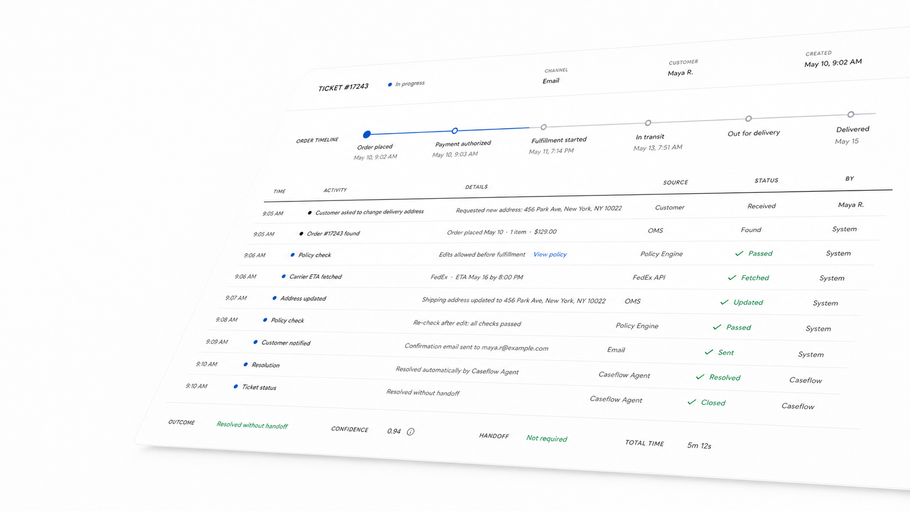

Caseflow for ecommerce support
Put support operations on autopilot
AI agents resolve order tracking, returns, refunds, cancellations, address edits, and product questions by checking policy and acting inside your systems.
Coverage
The repetitive queue becomes a controlled workflow.
Agent copies an order number between helpdesk, OMS, and carrier tabs.
Order, shipment, and customer history are fetched into one case record.
ETA sentRefund decisions vary by agent, shift, and policy interpretation.
Policy rules are checked before every refund, credit, or replacement.
Policy passedAddress edits sit in queue until fulfillment has already started.
Allowed edits are applied before shipment and written back to the OMS.
UpdatedLow-risk tickets still wait behind complex escalations.
Only ambiguous cases hand off, with the transcript and reasoning attached.
Escalation filteredWork handled
Built around the jobs support teams actually repeat.
Where is my order?
Carrier ETA, fulfillment state, and promised delivery windows checked before reply.
Can I change this?
Address edits, cancellations, and order changes approved only inside policy limits.
Can I get a refund?
Return windows, item condition, payment state, and fraud signals reviewed first.
Which product should I buy?
Catalog answers, availability, variant guidance, and compatibility questions handled.
Policy and audit
Every autonomous action leaves a readable trail.
Caseflow does not hide behind a confidence score. It records the source, rule, decision, and system update for each step.
Setup
Start narrow. Prove it. Expand from the audit trail.
-
01
Connect sources
Helpdesk, OMS, carrier, catalog, payments, and knowledge base.
-
02
Import policies
Return rules, refund thresholds, shipping promises, and escalation paths.
-
03
Approve actions
Set which updates agents can perform and where human review remains required.
-
04
Release by queue
Launch order tracking first, then expand to refunds, returns, and product support.
Measured after 90 days
Fewer repetitive tickets. More accountable automation.
See which support workflows are ready for automation.
Send a sample queue. Caseflow maps the repetitive paths, the policy gates, and the exact actions an agent can safely take.
Run a support audit